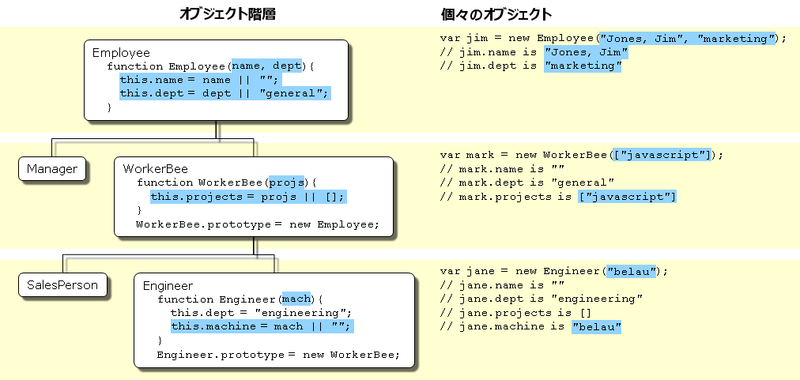
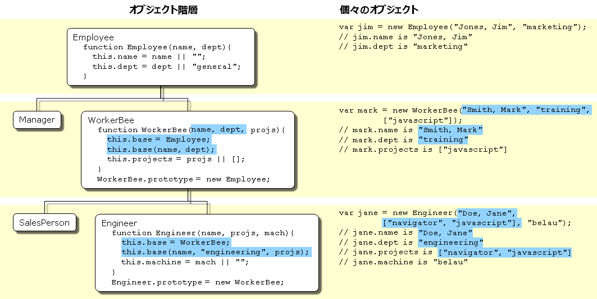

JavaScript は、クラスではなく、プロトタイプに基づいたオブジェクトベースの言語です。この基本的な違いにより、JavaScript がオブジェクト階層構造をどのように作り上げているか、またプロパティやその値の継承方法が表面上分かりにくいものとなっています。本章ではこれらの実態を明らかにしていきます。
本章では、読者が JavaScript をある程度理解している、および単純なオブジェクトを作成するために JavaScript の関数を使用したことがあると想定しています。
Java や C++ といったクラスベースのオブジェクト指向言語は、クラスとインスタンスという 2 種類の異なる実体があるという概念に基づいています。
Employee クラスは従業員すべての集合を表現することができます。Victoria は Employee クラスのインスタンスになることができます。このインスタンスは、特定の個人を従業員として表すものです。インスタンスは、その親クラスのプロパティを (過不足なく) 正確に保持します。JavaScript のようなプロトタイプベースの言語では、この区別がありません。オブジェクトだけがあります。プロトタイプベース言語には、プロトタイプオブジェクト (prototypical object) という概念があります。このオブジェクトは、新しいオブジェクトの初期プロパティの取得元になるテンプレートとして使用されます。どのオブジェクトも独自のプロパティを指定できます。これはオブジェクト作成時にも実行時にも可能です。さらに、どのオブジェクトも別のオブジェクトに対するプロトタイプとして関連づけることができます。2 つ目のオブジェクトに対し 1 つ目のオブジェクトのプロパティを共有させることもできます。
クラスベース言語では、独立したクラス定義でクラスを定義します。定義ではコンストラクターと呼ばれる特殊なメソッドを使用して、そのクラスのインスタンスを作成することができます。コンストラクターメソッドは、インスタンスのプロパティに対する初期値を指定することができます。また、作成時に他の適切な処理を実行することもできます。new 演算子をコンストラクターメソッドと一緒に用いることで、クラスのインスタンスを作成できます。
JavaScript は同様のモデルに従っていますが、コンストラクターとは別のクラス定義はありません。その代わりに、プロパティと値からなる特別な初期セットを持つオブジェクトを作成する、コンストラクター関数を定義します。どの JavaScript 関数もコンストラクターとして使用できます。new 演算子をコンストラクター関数とともに使用することで、新しいオブジェクトを作成します。
注: ECMAScript 2015 で導入されたクラス宣言について。
ECMAScript 2015 で導入された JavaScript のクラスは、主に JavaScript の既存のプロトタイプベースの継承に対する糖衣構文です。クラス構文は、JavaScript に新しいオブジェクト指向の継承モデルを導入するものではありません。
クラスベース言語では、クラス定義を通してクラスの階層を作ります。クラス定義では、新しいクラスが既存のクラスのサブクラスになるよう指定することができます。サブクラスはスーパークラスの全プロパティを継承します。さらに、新たなプロパティの追加や継承したプロパティの変更もできます。例えば、Employee クラスが name および dept プロパティのみを含み、Manager は reports プロパティが追加された Employee のサブクラスであるとします。この場合、Manager クラスのインスタンスは name、dept、reports の 3 つのプロパティをすべて持つことになります。
JavaScript では、プロトタイプオブジェクトを何らかのコンストラクター関数に結びつけられるようにすることで、継承を実装しています。そのため、全く同じように Employee と Manager の例を作成できますが、使用する用語が若干異なります。まず、Employee コンストラクター関数を定義し、name および dept プロパティを定義します。次に Manager コンストラクター関数を定義し、Employee コンストラクター関数を呼び出して reports プロパティを定義します。最後に、Manager コンストラクト関数の prototype に Employee.prototype から派生した新しいオブジェクトを代入します。そして新しい Manager を作成すると、このオブジェクトは Employee オブジェクトから name および dept プロパティを継承します。
クラスベース言語では一般的にクラスをコンパイル時に生成し、コンパイル時または実行時にクラスのインスタンスを作成します。クラス定義後に、そのクラスのプロパティの数や型を変更することはできません。しかし JavaScript では、どのオブジェクトでも実行時にプロパティの追加や削除ができます。ある一連のオブジェクトでプロトタイプとして使用されているオブジェクトにプロパティを追加すると、それをプロトタイプとするオブジェクトにも新しいプロパティが追加されます。
こうした相違点の要約を以下の表にまとめています。本章では後ほど、JavaScript のコンストラクターとプロトタイプを用いたオブジェクト階層作成の詳細を説明し、Java における手法との比較も行っていきます。
| クラスベース (Java) | プロトタイプベース (JavaScript) |
|---|---|
| クラスとインスタンスは異なる実体です。 | すべてのオブジェクトは別のオブジェクトを継承できます。 |
| クラス定義を用いてクラスを定義します。また、コンストラクターメソッドを用いてクラスをインスタンス化します。 | コンストラクター関数を用いて一連のオブジェクトを定義および作成します。 |
new 演算子を用いて単一のオブジェクトを生成します。 |
同様です。 |
| 既存のクラスのサブクラスを定義するクラス定義を用いて、オブジェクト階層を構築します。 | コンストラクター関数に結びつけられたプロトタイプとしてオブジェクトを代入することで、オブジェクト階層を構築します。 |
| クラスチェーンに従ってプロパティを継承します。 | プロトタイプチェーンに従ってプロパティを継承します。 |
| クラス定義が、クラスから作られた全インスタンスすべてのプロパティを定義します。実行時に動的にプロパティを追加することはできません。 | コンストラクター関数またはプロトタイプによって、一連の初期化されたプロパティが指定されます。個々のオブジェクトやオブジェクトのセット全体へ動的にプロパティを追加したり、それらからプロパティを削除したりできます。 |
ここからは、次の図で示す従業員の階層を使用していきます。
これは、以下のオブジェクトのオブジェクト階層を示しています。
Employee には、プロパティ name (既定値は空文字列) および dept (既定値は "general") があります。Manager は Employee をベースとしています。reports プロパティ (既定値は空の配列、値として Employee オブジェクトの配列を保持する) が追加されています。WorkerBee も Employee をベースとしています。projects プロパティ (既定値は空の配列、値として文字列の配列を保持する) が追加されています。SalesPerson は WorkerBee をベースとしています。quota プロパティ (既定の値は 100) が追加され、さらに dept プロパティを "sales" という値で上書きします。これは、販売員が全員同じ部署に所属していることを示します。Engineer は WorkerBee をベースとしています。machine プロパティ (既定の値は空文字列) が追加され、さらに dept プロパティを "engineering" という値で上書きします。Employee の階層を実装するための、適切なコンストラクター関数を定義する方法はいくつかあります。どの方法で定義するかは、アプリケーションで何を実現したいかに大きく依存します。
この章では、継承がどのように機能するかを表現するため、とても単純な (かつ比較的柔軟でない) 定義の使い方でこれを説明していきます。この定義方法では、オブジェクト作成時にプロパティの値を指定することはできません。新しく作成されるオブジェクトには既定値が割り当てられ、値は後から変更できます。
実際のアプリケーションでは、オブジェクト作成時にプロパティの値を指定できるコンストラクターを定義することになるでしょう (詳しくはより柔軟なコンストラクターをご覧ください) 。今回はこれらの単純な定義を使用して、継承はどのようにして起こるのかを実際に示していくことにします。
以下に示すように、Java と JavaScript の Employee の定義は似ています。両者の相違点は、Java では各プロパティに型を指定する必要があるのに対して、JavaScript ではその必要がないことです (これは JavaScript が弱い型付けの言語であるのに対して Java が 強い型付け言語だからです) 。
class Employee {
constructor() {
this.name = '';
this.dept = 'general';
}
}
function Employee() {
this.name = '';
this.dept = 'general';
}
public class Employee {
public String name = "";
public String dept = "general";
}
Manager および WorkerBee の定義では、継承チェーンにおいて隣接する上位オブジェクトの指定方法に違いがあります。JavaScript では、プロトタイプインスタンスをコンストラクター関数の prototype プロパティの値として追加し、さらに prototype.constructor をコンストラクター関数で上書きします。コンストラクターを定義した後なら、いつでもこれを行うことができます。Java では、クラス定義内でスーパークラスを指定します。クラス定義の外部でスーパークラスを変更することはできません。
function Manager() {
Employee.call(this);
this.reports = [];
}
Manager.prototype = Object.create(Employee.prototype);
Manager.prototype.constructor = Manager;
function WorkerBee() {
Employee.call(this);
this.projects = [];
}
WorkerBee.prototype = Object.create(Employee.prototype);
WorkerBee.prototype.constructor = WorkerBee;
public class Manager extends Employee {
public Employee[] reports =
new Employee[0];
}
public class WorkerBee extends Employee {
public String[] projects = new String[0];
}
Engineer および SalesPerson の定義は、WorkerBee の子孫、したがって Employee の子孫でもあるオブジェクトを作成します。こうした種類のオブジェクトは、チェーンの上位にある全オブジェクトのプロパティを持ちます。さらに、これらの定義によって、継承された dept のプロパティ値を、自身のオブジェクト固有の新しい値に上書きしています。
function SalesPerson() {
WorkerBee.call(this);
this.dept = 'sales';
this.quota = 100;
}
SalesPerson.prototype = Object.create(WorkerBee.prototype);
SalesPerson.prototype.constructor = SalesPerson;
function Engineer() {
WorkerBee.call(this);
this.dept = 'engineering';
this.machine = '';
}
Engineer.prototype = Object.create(WorkerBee.prototype)
Engineer.prototype.constructor = Engineer;
public class SalesPerson extends WorkerBee {
public String dept = "sales";
public double quota = 100.0;
}
public class Engineer extends WorkerBee {
public String dept = "engineering";
public String machine = "";
}
これらの定義を使用して、プロパティが既定値をとる、オブジェクトのインスタンスを作成することができます。下記の図は、これらの JavaScript の定義を使用して新しいオブジェクトを作成する方法を示しています。また、新しいオブジェクトのプロパティの値も示しています。
注: インスタンスという用語は、クラスベースの言語においては特定の技術的な意味を持っています。これらの言語では、インスタンスとはクラスの個々のメンバであり、クラスとは根本的に異なるものです。JavaScript では、「インスタンス」にこのような技術的な意味はありません。なぜならば、JavaScript ではクラスとインスタンスとの間にそのような違いがないためです。しかしながら、JavaScript について話す際に「インスタンス」を、個々のコンストラクター関数を用いて作成されたオブジェクトを意味する言葉として、非公式に使用することがあります。例えば jane は非公式に Engineer のインスタンスであると言うこともできます。同様に、「親」、「子」、「祖先」、「子孫」という用語は JavaScript において公式な意味を持ちませんが、プロトタイプチェーンにおいて上や下にあるオブジェクトについて言及する際に、それらを非公式に使用してもかまいません。
下記のような階層が、右に書かれたコードを使って作成されます。

var jim = new Employee; // Parentheses can be omitted if the // constructor takes no arguments. // jim.name is '' // jim.dept is 'general' var sally = new Manager; // sally.name is '' // sally.dept is 'general' // sally.reports is [] var mark = new WorkerBee; // mark.name is '' // mark.dept is 'general' // mark.projects is [] var fred = new SalesPerson; // fred.name is '' // fred.dept is 'sales' // fred.projects is [] // fred.quota is 100 var jane = new Engineer; // jane.name is '' // jane.dept is 'engineering' // jane.projects is [] // jane.machine is ''
この章では、オブジェクトがどのようにしてプロトタイプチェーンにより他のオブジェクトからプロパティを継承するのか、また実行時にプロパティを追加すると何が起きるのかについて考察します。
次の文を用いて、mark オブジェクトを WorkerBee として生成するとしましょう。
var mark = new WorkerBee;
JavaScript は new 演算子に出会うと、新しく汎用オブジェクトを作成し、暗黙に内部プロパティ [[Prototype]] の値を WorkerBee.prototype の値に設定し、その新しいオブジェクトを this キーワードの値として WorkerBee コンストラクター関数に渡します。内部の [[Prototype]] プロパティはプロパティ値を返すために使用されるプロトタイプチェーンを決定します。これらのプロパティが設定されると JavaScript は新しいオブジェクトを返し、代入文によって変数 mark にそのオブジェクトが設定されます。
このプロセスでは、mark がプロトタイプチェーンによって継承するプロパティは、mark オブジェクトの値には (ローカル値としては) 明示的に格納されません。プロパティの値を使用するときは、JavaScript はまずその値がオブジェクトに存在しているかを確認します。存在する場合は、その値が返されます。値がローカルには存在しない場合、JavaScript はプロトタイプチェーンを確認します (内部的な [[Prototype]] プロパティを使用) 。プロトタイプチェーン内のオブジェクトがそのプロパティの値を持っている場合は、その値が返されます。そのようなプロパティが見つからない場合、JavaScript はオブジェクトにそのプロパティがないと報告します。このようにして、mark オブジェクトは次のようなプロパティと値を持つことになります。
mark.name = ''; mark.dept = 'general'; mark.projects = [];
mark オブジェクトは、Employee コンストラクターによって name および dept プロパティのローカル値が割り当てられます。projects プロパティには、WorkerBee コンストラクターによってローカル値が代入されます。JavaScript ではこのようにプロパティとその値の継承を行います。このプロセスの詳細はプロパティの継承、再びにて説明します。
これらのコンストラクターはインスタンス固有の値を渡せないため、この情報は汎用的になります。プロパティの値は、WorkerBee によって作成されるすべての新しいオブジェクトに共通の既定値になります。もちろん、これらのどのプロパティでも値を変更することができます。そのためには、次のようにして mark に固有の情報を与えます。
mark.name = 'Doe, Mark'; mark.dept = 'admin'; mark.projects = ['navigator'];
JavaScript では、実行時にどんなオブジェクトにもプロパティを追加することができます。コンストラクター関数で与えられるプロパティだけしか使えないわけではありません。単一のオブジェクトに特化してプロパティを追加するには、次のようにオブジェクトに値を代入します。
mark.bonus = 3000;
すると、mark オブジェクトに bonus プロパティができます。しかし WorkerBee にはこのプロパティは存在しません。
あるコンストラクター関数のプロトタイプとして使用されているオブジェクトに新しいプロパティを追加すると、プロトタイプからプロパティを継承する全オブジェクトにそのプロパティを追加します。例えば、次の文を使用すると specialty プロパティをすべての従業員に対して追加することができます。
Employee.prototype.specialty = 'none';
JavaScript でこの文が実行されると、即座に mark オブジェクトも specialty プロパティを "none" という値で持つようになります。次の図では、プロパティを Employee プロトタイプに追加し、さらに Engineer プロトタイプに存在するプロパティを上書きしたときの効果を示しています。
これまでに見てきたコンストラクター関数は、インスタンス作成時にプロパティの値を指定することができませんでした。Java のようにコンストラクターに引数を与えて、インスタンスのプロパティの値を初期化することができます。以下の図はこれを実現する方法の一つの方法です。
Java および JavaScript におけるこれらのオブジェクト定義を次表に示します。
function Employee(name, dept) {
this.name = name || '';
this.dept = dept || 'general';
}
public class Employee {
public String name;
public String dept;
public Employee () {
this("", "general");
}
public Employee (String name) {
this(name, "general");
}
public Employee (String name, String dept) {
this.name = name;
this.dept = dept;
}
}
function WorkerBee(projs) {
this.projects = projs || [];
}
WorkerBee.prototype = new Employee;
public class WorkerBee extends Employee {
public String[] projects;
public WorkerBee () {
this(new String[0]);
}
public WorkerBee (String[] projs) {
projects = projs;
}
}
function Engineer(mach) {
this.dept = 'engineering';
this.machine = mach || '';
}
Engineer.prototype = new WorkerBee;
public class Engineer extends WorkerBee {
public String machine;
public Engineer () {
dept = "engineering";
machine = "";
}
public Engineer (String mach) {
dept = "engineering";
machine = mach;
}
}
これらの JavaScript の定義では、既定値の設定に特殊な構文を使用しています。
this.name = name || '';
JavaScript の論理和 (OR) 演算子 (||) は、その最初の引数を評価します。その引数が true に評価される場合、演算子はその引数を返します。そうでない場合、第2引数の値を返します。したがって、このコードは name が name プロパティの値に使用できる値かどうかを確認します。使用できると確認されれば this.name にその値を設定します。そうでなければ this.name に空文字列をセットします。本章ではこの方法がより簡潔なのでこの構文を使用していますが、一目見ただけでは不可解に思えるかもしれません。
注: ご想像の通り、この構文はコンストラクターが false に変換される引数 (0 や空文字列 ("") など) と共に呼び出された場合は動作しません。その場合は既定値が選択されます。
これらの定義を用いると、オブジェクトのインスタンスを作成するときに、局所的に定義されたプロパティに対する値を指定することができます。次の文を使用すると新しい Engineer を作成できます。
var jane = new Engineer('belau');
すると Jane のプロパティは次のようになります。
jane.name == ''; jane.dept == 'engineering'; jane.projects == []; jane.machine == 'belau';
これらの定義では、name のような継承されたプロパティに対して初期値を指定することはできない点に注意してください。JavaScript で継承されるプロパティに対し初期値を指定したいのであれば、コンストラクター関数にさらにコードを追加する必要があります。
ここまでは、コンストラクター関数は汎用オブジェクトを生成し、その後で新しいオブジェクトに対してローカルプロパティと値を定義していました。プロトタイプチェーンのより上位のオブジェクトのコンストラクター関数を直接呼び出すことで、コンストラクターへさらにプロパティを追加することができます。次の図はこの新しい定義方法です。
これらの定義の一つを詳しく見ていきましょう。これは Engineer コンストラクターの新しい定義です。
function Engineer(name, projs, mach) {
this.base = WorkerBee;
this.base(name, 'engineering', projs);
this.machine = mach || '';
}
次のようにして新しい Engineer オブジェクトを作成するとします。
var jane = new Engineer('Doe, Jane', ['navigator', 'javascript'], 'belau');
JavaScript は次の手順を踏みます。
new 演算子が汎用オブジェクトを生成し、その __proto__ プロパティに Engineer.prototype を設定します。new 演算子が this キーワードの値としてこの新しい汎用オブジェクトを Engineer コンストラクターに渡します。base という新しいプロパティを生成し、WorkerBee コンストラクターの値を base プロパティに代入します。これにより、WorkerBee コンストラクターは Engineer オブジェクトのメソッドになります。base というプロパティ名は特別なものではありません。あらゆる正当なプロパティ名を使用できますが、ここで base という名前を使うのは、その目的をたやすくイメージさせるためです。base メソッドを呼び出します。その引数として、コンストラクターに渡された引数のうち 2 つ ("Doe, Jane" および ["navigator", "javascript"]) と、さらに文字列 "engineering" を渡します。コンストラクターで "engineering" を明示的に使用するのは、すべての Engineer オブジェクトは継承により dept プロパティは同じ値となっていて、Employee から継承された値を指定値に上書きするためです。base は Engineer のメソッドであるため、base を呼び出す際に、JavaScript によって this キーワードをステップ 1 で作成したオブジェクトにバインドします。これにより、WorkerBee 関数は順に "Doe, Jane" および "engineering" という引数を Employee コンストラクター関数に渡します。Employee コンストラクター関数から戻ると、WorkerBee 関数は残りの引数を使用して projects プロパティをセットします。base メソッドから戻ると、Engineer コンストラクターがオブジェクトの machine プロパティを "belau" に初期化します。jane という変数に代入します。Engineer コンストラクターの内部から WorkerBee コンストラクターを呼び出しさえすれば、きちんと Engineer オブジェクトに継承が設定されるように思うかもしれません。しかし実際はそうではありません。WorkerBee コンストラクターを呼び出すことで、呼び出されるすべてのコンストラクター関数によって指定されたプロパティを持つ Engineer オブジェクトは確かに作成されます。しかし、後からプロパティを Employee または WorkerBee のプロトタイプに追加しても、それらのプロパティは Engineer オブジェクトに継承されません。例えば、次のような文を書いたとします。
function Engineer(name, projs, mach) {
this.base = WorkerBee;
this.base(name, 'engineering', projs);
this.machine = mach || '';
}
var jane = new Engineer('Doe, Jane', ['navigator', 'javascript'], 'belau');
Employee.prototype.specialty = 'none';
jane オブジェクトは specialty プロパティを継承しません。動的な継承を確実にするには、やはりプロトタイプを明示的に示す必要があります。代わりに次の文を使用しましょう。
function Engineer(name, projs, mach) {
this.base = WorkerBee;
this.base(name, 'engineering', projs);
this.machine = mach || '';
}
Engineer.prototype = new WorkerBee;
var jane = new Engineer('Doe, Jane', ['navigator', 'javascript'], 'belau');
Employee.prototype.specialty = 'none';
すると、jane オブジェクトの specialty プロパティの値は "none" になります。
もう一つの継承方法は、call() / apply() メソッドを使うことです。以下の二つは同等です。
function Engineer(name, projs, mach) {
this.base = WorkerBee;
this.base(name, 'engineering', projs);
this.machine = mach || '';
}
function Engineer(name, projs, mach) {
WorkerBee.call(this, name, 'engineering', projs);
this.machine = mach || '';
}
JavaScript の call() メソッドを使うことで、実装がよりきれいになります。base が全く必要ないからです。
これまでの節では、JavaScript のコンストラクターとプロトタイプが階層をどのように実現しているかを説明してきました。この節では、これまでの議論では必ずしも明白ではなかった、細かい部分について議論していきます。
オブジェクトのプロパティにアクセスすると、この章で先に説明したように、JavaScript は次のステップを実行します。
__proto__ プロパティを使用) 。このステップの結果は、それまでにどのようにオブジェクトを定義したかによります。元の例では次の定義を用いました。
function Employee() {
this.name = '';
this.dept = 'general';
}
function WorkerBee() {
this.projects = [];
}
WorkerBee.prototype = new Employee;
この定義を前提とし、次の文を用いて WorkerBee のインスタンスとして amy を作成するとします。
var amy = new WorkerBee;
amy オブジェクトにはローカルプロパティが 1 つあります。それは projects です。name および dept プロパティの値は amy にとってローカルではないため、amy オブジェクトの __proto__ プロパティから取得します。その結果、amy には次のプロパティが存在することになります。
amy.name == ''; amy.dept == 'general'; amy.projects == [];
ここで、Employee に結びつけられたプロトタイプの name プロパティの値を変えてみましょう :
Employee.prototype.name = 'Unknown';
一見、Employee の全インスタンスに新しい値が反映されるように思われます。しかし、そうはなりません。
Employee オブジェクトからなるいかなるインスタンスを作成しても、そのインスタンスは name プロパティのローカル値 (空文字列) を持つことになります。つまり、新しい Employee オブジェクトの作成に WorkerBee プロトタイプを設定すれば、WorkerBee.prototype は name プロパティのためのローカル値を持つことになる、ということです。そのため、JavaScript が amy オブジェクト (WorkerBee のインスタンス) の name プロパティを探すと、JavaScript はそのプロパティのローカル値を WorkerBee.prototype 内で発見します。結果、Employee.prototype まではチェーンの検索は行われません。
実行時にオブジェクトのプロパティの値を変更し、新しい値がそのオブジェクトのすべての子孫に継承するようにしたい場合は、オブジェクトのコンストラクター関数内でそのプロパティを定義してはいけません。その代わりに、コンストラクター関数に結びつけられたプロトタイプにプロパティを追加します。例えば、先のコードを次のように変更しましょう。
function Employee() {
this.dept = 'general'; // Note that this.name (a local variable) does not appear here
}
Employee.prototype.name = ''; // A single copy
function WorkerBee() {
this.projects = [];
}
WorkerBee.prototype = new Employee;
var amy = new WorkerBee;
Employee.prototype.name = 'Unknown';
こうすれば、amy の name プロパティは "Unknown" になります。
この例で示したように、オブジェクトのプロパティに既定の値を持たせて、実行時に既定値を変更したいのであれば、コンストラクター関数内でなく、コンストラクターのプロトタイプ内でプロパティを設定するようにしてください。
JavaScript でのプロパティ探索は、まずオブジェクト自身のプロパティ内で探索し、そのプロパティ名が存在しない場合は特殊なオブジェクトプロパティである __proto__ で探索します。これは再帰的に継続されます。このプロセスを「プロトタイプチェーンの探索」と呼びます。
この特別なプロパティ __proto__ は、オブジェクトが構築される際に設定されて、コンストラクターの prototype プロパティを構成する値となります。よって、式 new Foo() は __proto__ == となるオブジェクトを作成します。その結果、Foo.prototypeFoo.prototype のプロパティの変更により、new Foo() で作成されたすべてのオブジェクトのプロパティ探索が変更されます。
すべてのオブジェクトは (Object を除いて) __proto__ オブジェクトプロパティを持ちます。また、すべての関数は prototype オブジェクトプロパティを持ちます。したがって、「プロトタイプ継承」を用いてオブジェクトを別のオブジェクトへ関連づけられます。オブジェクトの __proto__ と関数の prototype オブジェクトを比較することで、継承状態の確認ができます。これを行う手っ取り早い方法が JavaScript にはあります。instanceof 演算子はオブジェクトと関数を検査して、オブジェクトが関数のプロトタイプから継承している場合に true を返します。例えば、
var f = new Foo(); var isTrue = (f instanceof Foo);
もっと詳しい例として、プロパティの継承で利用した定義を使ってみましょう。以下のようにして Engineer オブジェクトを作成しましょう。
var chris = new Engineer('Pigman, Chris', ['jsd'], 'fiji');
このオブジェクトでは、以下の文はすべて true になります。
chris.__proto__ == Engineer.prototype; chris.__proto__.__proto__ == WorkerBee.prototype; chris.__proto__.__proto__.__proto__ == Employee.prototype; chris.__proto__.__proto__.__proto__.__proto__ == Object.prototype; chris.__proto__.__proto__.__proto__.__proto__.__proto__ == null;
ここで次のような instanceOf 関数を書いてみましょう。
function instanceOf(object, constructor) {
object = object.__proto__;
while (object != null) {
if (object == constructor.prototype)
return true;
if (typeof object == 'xml') {
return constructor.prototype == XML.prototype;
}
object = object.__proto__;
}
return false;
}
注: 上記の実装では、最近のバージョンでの JavaScript における XML オブジェクト表現法の癖を回避するために、オブジェクトの型と "xml" とを照合しています。具体的な詳細を知りたい場合は {{bug(634150)}} をご覧ください。
この定義を用いると、以下の式はすべて true になります。
instanceOf(chris, Engineer) instanceOf(chris, WorkerBee) instanceOf(chris, Employee) instanceOf(chris, Object)
しかし、次の式は false になります。
instanceOf(chris, SalesPerson)
コンストラクターを作成する際、コンストラクター内でグローバルな情報を設定する場合は注意が必要です。例えば、一意的な ID をそれぞれの新しい従業員情報へ自動的に代入したいとします。そこで、以下のように Employee を定義できます。
var idCounter = 1;
function Employee(name, dept) {
this.name = name || '';
this.dept = dept || 'general';
this.id = idCounter++;
}
この定義を用いると、新しい Employee を作成するたびに、コンストラクターが次の ID を順々に代入し、グローバルな ID カウンターをインクリメントします。その結果、続けて以下の文を置くと victoria.id は 1 に、harry.id は 2 となります。
var victoria = new Employee('Pigbert, Victoria', 'pubs');
var harry = new Employee('Tschopik, Harry', 'sales');
一見、これは申し分なさそうです。しかし、idCounter はどのような用途であろうと、Employee オブジェクトが作成されるたびにインクリメントされます。この章で示した Employee の階層全体を作成すると、Employee コンストラクターはプロトタイプをセットアップするたびに呼び出されます。次のようなコードがあるとします :
var idCounter = 1;
function Employee(name, dept) {
this.name = name || '';
this.dept = dept || 'general';
this.id = idCounter++;
}
function Manager(name, dept, reports) {...}
Manager.prototype = new Employee;
function WorkerBee(name, dept, projs) {...}
WorkerBee.prototype = new Employee;
function Engineer(name, projs, mach) {...}
Engineer.prototype = new WorkerBee;
function SalesPerson(name, projs, quota) {...}
SalesPerson.prototype = new WorkerBee;
var mac = new Engineer('Wood, Mac');
さらに、ここでは省かれている定義に base プロパティがあり、その定義がプロトタイプチェーンにおいて上位のコンストラクターを呼び出すとします。この場合、mac オブジェクトが作成されるまでに mac.id は 5 になってしまいます。
カウンターが余計にインクリメントされることが問題になるかどうかは、そのアプリケーション次第です。このカウンターの正確な値を気にするのであれば、代わりに一つの解決策として以下のようなコンストラクターが考えられます。
function Employee(name, dept) {
this.name = name || '';
this.dept = dept || 'general';
if (name)
this.id = idCounter++;
}
プロトタイプとして使用する Employee のインスタンスを作成するときに、コンストラクターに引数を与えてはいけません。このコンストラクターの定義を使用すれば、引数を渡さないときはコンストラクターが ID に値を代入せず、カウンターの更新も行いません。そのため、割り当てられる id を Employee に付与したい場合は、従業員の名前を指定する必要があります。この例では mac.id は 1 になります。
それ以外に、WorkerBee に割り当てるために Employee のプロトタイプオブジェクトのコピーを作成することもできます。
WorkerBee.prototype = Object.create(Employee.prototype); // instead of WorkerBee.prototype = new Employee
オブジェクト指向言語の中には、多重継承を許容するものがあります。つまり、オブジェクトが無関係な親オブジェクトから、プロパティと値を継承できるということです。JavaScript は多重継承をサポートしていません。
実行時のプロパティの値の継承は、JavaScript が値を見つけようとしてオブジェクトのプロトタイプチェーンを探索することで行われます。オブジェクトに結びつけられたプロトタイプは 1 つであるため、JavaScript は複数のプロトタイプチェーンから動的に継承することはできません。
JavaScript では、コンストラクター関数がその中で複数の別のコンストラクター関数を呼び出すようにすることができます。これによって多重継承状のものが実現できます。例えば以下の文があるとします。
function Hobbyist(hobby) {
this.hobby = hobby || 'scuba';
}
function Engineer(name, projs, mach, hobby) {
this.base1 = WorkerBee;
this.base1(name, 'engineering', projs);
this.base2 = Hobbyist;
this.base2(hobby);
this.machine = mach || '';
}
Engineer.prototype = new WorkerBee;
var dennis = new Engineer('Doe, Dennis', ['collabra'], 'hugo');
さらに、WorkerBee の定義はこの章で先に使用したものであるとします。この場合、dennis オブジェクトにはこれらのプロパティが存在します。
dennis.name == 'Doe, Dennis'; dennis.dept == 'engineering'; dennis.projects == ['collabra']; dennis.machine == 'hugo'; dennis.hobby == 'scuba';
dennis は Hobbyist コンストラクターから hobby プロパティを取得しているのです。ここで、Hobbyist コンストラクターのプロトタイプにプロパティを追加してみましょう。
Hobbyist.prototype.equipment = ['mask', 'fins', 'regulator', 'bcd'];
このようにしても dennis オブジェクトはこの新しいプロパティを継承しません。